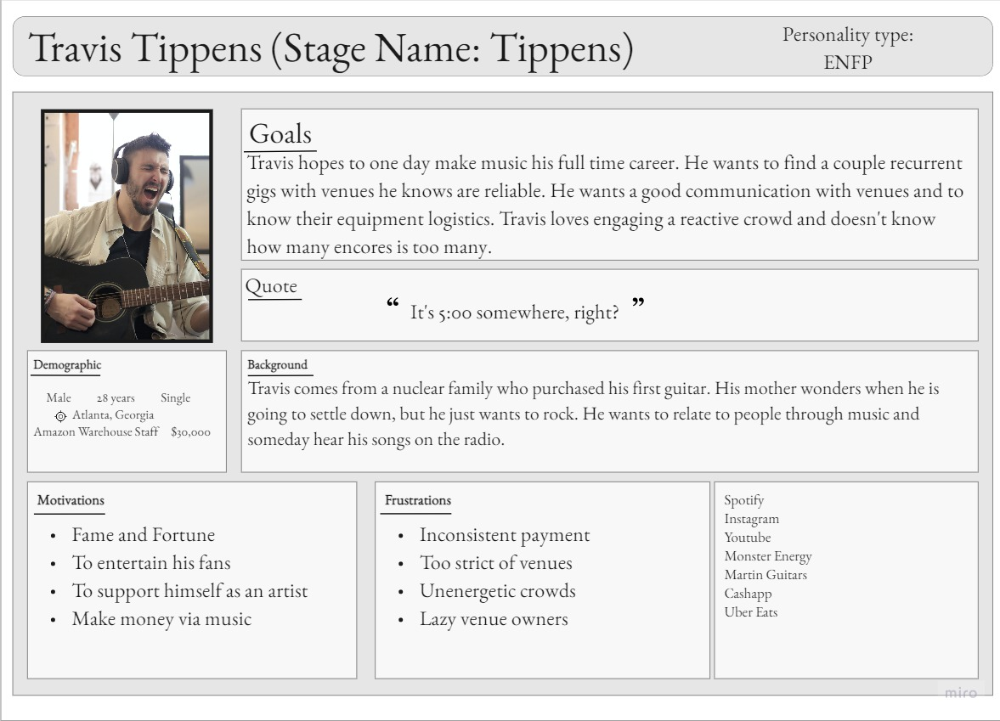

-
WeGig Case Study
BUBL Case Study NSA Case Study YMCA Case Study
WeGig Case Study
Finding new places to gig can be difficult for musicians, while filling in empty slots on the schedule can be difficult for venue operators. Both parties expressed frustrations with communication gaps about elements of the performance. For musicians, frustrations centered around the logistics of the performance time and stage area as well as ensuring prompt payment. For venue operators, frustrations centered around the time required for back and forth communication regarding booking and keeping abreast of popular new performers.
The Solution
WeGig makes the booking process easier by:
- By allowing musicians to see details and photos of each venue in advance
- By allowing venue operators to look at profiles of musicians and hear music clips before booking
- By simplifying two-way communication through the messaging and calendar features
Furthermore, the app promotes professionalism and accountability on both sides by encouraging that musicians and venues rate each other following a performance.
Anim pariatur cliche reprehenderit, enim eiusmod high life accusamus terry richardson ad squid. Nihil anim keffiyeh helvetica, craft beer labore wes anderson cred nesciunt sapiente ea proident.Anim pariatur cliche reprehenderit, enim eiusmod high life accusamus terry richardson ad squid. Nihil anim keffiyeh helvetica, craft beer labore wes anderson cred nesciunt sapiente ea proident.User Research
User Personas

- 3 User Interviews with musicians
- 3 User Interviews with Venue Owners/Operators
- 13 Survey Responses
Insight From Research
- Both sides used informal networks to gather information about possible performers or venues
- Both sides emphasized the need for communication and professionalism in order to establish solid working relationships.
- All of the musicians interviewed had experienced times when they finished a performance and never received payment for it.
- Musicians experienced arriving for shows without knowing what equipment was being provided
- Musicians sometimes needed to know upfront about load in and stage times in order to determine if a certain gig was feasible.
- Venue operators had multiple job responsibilities and expressed frustration with the amount of back and forth required to book musicians for a show
- Venue operators had frustrations with musicians who did not show professionalism about the gig, either by getting drunk or by not adapting their show to the needs of the venue and audience.
User Journey
The Users are a counterpart to one another, showing how the app works for both sides of the interaction. Lynn needed to find an act last minute due to a cancellation, and Travis wanted to make some money on the weekend and impress a girl.
WeGig brought them together and solved both problems. There is room for improvement, but we had a good foundation that was based on the results of our interviews and surveys.
Prioritization Matrix
A surprising number of ideas came out of our research, and narrowing it down to the main few was a difficult task. As shown here, some of the main features we agreed were most important were reviews, ease of access to information, contracts, estimates, and a couple of others.
We took these ideas and moved on to the user flow.